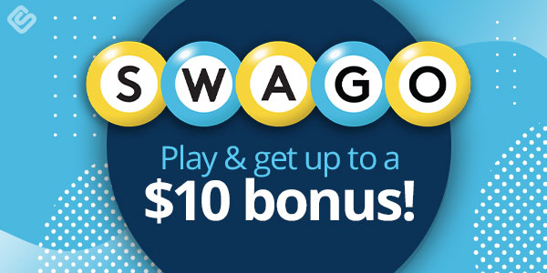

Earn from anywhere. No fluff — just what works
There are many ways people can make money online, even if you're just starting out. One of the easiest methods is through freelancing—offering services like writing, graphic design, or social media management on platforms such as Fiverr or Upwork. Another popular option is selling products on websites like Etsy or eBay. You can also start a blog or YouTube channel and earn through ads or sponsorships over time. For beginners looking for something more casual, there are apps that pay you for simple tasks like taking surveys, watching videos, or even playing games. While these won't make you rich, they're a fun and easy way to earn a little extra cash in your spare time.

Top Apps
Money-making apps are a great way to earn extra cash in your free time, and survey apps are some of the easiest to get started with. These apps reward you for sharing your opinions through quick surveys, helping companies improve their products and services while you earn points or cash. There are plenty of options out there, but in this post, I’m going to break down some of the top apps that make it simple to start earning right away, including Swagbucks, Toluna, Google Opinion Rewards, Freecash, and InboxDollars. Each of these apps has its own perks, payout options, and unique features that can help you maximize your earnings, so let’s dive into what makes them worth your time.
Freecash: A Detailed Overview
Freecash is one of the fastest-growing and most user-friendly rewards platforms for earning real money online. Launched in 2020, it quickly gained traction among users worldwide thanks to its sleek interface, high-paying offers, and fast payout system. Freecash allows users to make money by completing a variety of simple tasks such as taking surveys, testing apps, signing up for websites, and more. What sets it apart is its consistent payout rates and reliable reputation in the online earning space.
One of Freecash’s standout features is its incredibly low withdrawal threshold—you can cash out with as little as $0.10, making it perfect for beginners who want quick rewards. The platform supports multiple payout options including PayPal, Bitcoin, Ethereum, Litecoin, and gift cards for popular retailers like Amazon, Steam, and Google Play.
Top Achievements of Freecash:
- Rated #1 GPT Site on Trustpilot in its category with a 4.6+ star average, based on tens of thousands of reviews.
- Over $40 million paid out to users worldwide since its launch.
- Fastest payout processing among similar platforms—many users receive payments within minutes.
- Consistent leaderboard rewards, with top daily and monthly earners getting bonus prizes (up to $500 per month).
- Global availability, supporting users from almost every country, with offers tailored to specific regions.
Visit Freecash Official Website
Freecash continues to grow by partnering with reputable offer providers and expanding its reward catalog, making it one of the most promising apps for anyone serious about earning money online.
2Captcha: A Detailed Overview
2Captcha is a microtasking platform that pays users to solve captchas—those small puzzles or image/text challenges used by websites to verify that you're human. It's one of the simplest and most accessible ways to earn money online, especially for people in countries with limited access to higher-paying survey or gig platforms. Since its launch, 2Captcha has built a reputation as a steady, low-barrier option for earning small but consistent amounts of money.
Users on 2Captcha can earn by solving both traditional text-based captchas and more complex image-based ones like reCAPTCHA and hCaptcha. The work is repetitive but easy to do, and no prior skills or experience are required. As long as you can type accurately and quickly, you can start earning. The platform operates 24/7, so tasks are usually available at all times, although rates can fluctuate depending on demand and the time of day. Payouts can be made via several convenient methods including Payeer, Bitcoin, WebMoney, and others, with a very low withdrawal threshold—typically starting at just $0.50 to $1 depending on the method.
Top Achievements of 2Captcha:
- Over 1 million registered workers from around the world.
- Operational since 2014, making it one of the most stable and longest-running captcha-solving platforms.
- Supports automated work through its API, which is often used by developers and bot creators needing bulk captcha solutions.
- Global availability, allowing users from nearly any country to sign up and work without restrictions.
- Reliable payment history, with users regularly reporting successful withdrawals and consistent payouts.
Visit 2Captcha Official Website
While 2Captcha won’t make you rich, it's a legit way to earn a few extra dollars online, especially if you’re just starting out and looking for something simple and always available.
Swagbucks: A Detailed Overview
Swagbucks is one of the most popular and well-established rewards platforms that pays users for doing everyday online activities like taking surveys, watching videos, shopping online, playing games, and using its search engine. Launched in 2008 by Prodege, LLC, Swagbucks has built a solid reputation as a reliable way for users to earn points—called SB—which can be redeemed for PayPal cash or gift cards to major retailers like Amazon, Walmart, and Starbucks.> One of Swagbucks’ key strengths is its versatility—it offers more ways to earn than most other apps in its category, making it especially appealing to users looking for multiple income streams in one place. Whether you're taking surveys during your commute, watching video playlists while doing chores, or earning cashback on your online purchases, Swagbucks makes it easy to rack up points.
Top Achievements of Swagbucks:
- Over $900 million paid out to users since its launch.
- Trusted by over 10 million users worldwide.
- Featured by major media outlets like Forbes, The Wall Street Journal, and NBC News for its reliability and high user satisfaction.
- Winner of multiple Consumer Choice Awards in the survey and cashback app category.
- Frequently ranked as a top-rated app on both the App Store and Google Play.
Visit Swagbucks Official Website
With daily bonuses, promotional codes (called Swag Codes), and a generous referral program, Swagbucks continues to be a favorite for people looking to earn money online without needing any upfront investment.
üì∏ PicturePunches ‚Äî Platform Overview
PicturePunches is a meme-centric platform founded by Farris Harbi, designed to help meme creators monetize their humor. Creators register for free, create their own “channels” or “rooms,” and upload original memes. Each meme features a small, sponsored advertisement beneath it, generating revenue per impression. Payments are issued via PayPal, AirTM, or even USDT, with a low withdrawal threshold of just $1.00
PicturePunches stands out as a fun, low‑entry point platform for creative individuals who enjoy making memes and want to monetize their content. While earnings per meme are modest—typically only a few cents—consistent uploads and active engagement can build up revenue over time. The referral program adds a bonus income stream, and payment flexibility makes it accessible for many. That said, the platform is best suited for casual side‑income seekers rather than professional creators, given the low per‑piece payouts and evolving user interface.
Top Achievements of PicturePunches:
- Platform Launch & Global Reach Founded in mid‑2025, PicturePunches quickly gained global accessibility, welcoming users from around the world and making monetized meme creation widely available
- Income Benchmarks One of the highest-known achievers posted approximately 9,000 memes and earned a total of $489, which averages out to about 5¢ per meme. This reflects what can be achieved with high volume and persistence
- Another long-term user reported having uploaded over 1,000 memes and earned around $50, averaging about 4¢ per meme, while also earning roughly $10 through referrals
- Consistently high user engagement with millions of memes viewed monthly.
- Pay‑out begins at a minimum of only $1, with multiple payout options (PayPal, AirTM, USDT). Access is available worldwide, making it a user‑friendly system even for beginners
Visit PicturePunches Official Website
While some users enjoy the platform’s creative outlet and earning potential, others have criticized the site's navigation and design. Common feedback includes unclear layout and limited UX intuitiveness
Clickworker Plartform Overview
Clickworker is a well-established microtasking platform that allows individuals from around the world to earn money online by completing small, digital tasks. Founded in 2005 and based in Germany, Clickworker connects freelance workers—called “Clickworkers”—with companies that need human intelligence tasks (HITs) completed efficiently. The platform offers a wide variety of tasks including data categorization, web research, product tagging, content creation, proofreading, app testing, and surveys. One of its standout features is the UHRS (Universal Human Relevance System) integration, which gives users access to additional high-paying search engine evaluation tasks.
Top Achievements of Clickworker:
- Over 3.6 million registered users from more than 136 countries, making it one of the largest crowdsourcing platforms globally.
- Trusted by major global brands such as Huawei, T-Mobile, and ShareNow to handle complex digital tasks at scale.
- Recognized as a leader in the AI training data space, Clickworker plays a key role in helping AI and machine learning systems become more accurate through human-validated input.
- Offers flexible mobile access through its Clickworker app, allowing users to complete tasks on the go.
- Known for reliable payment systems, including options like PayPal and SEPA bank transfers, with consistent payouts, a low withdrawal threshold of just €5 and a transparent earnings dashboard.
Visit Clickworker Official Website
Whether you're looking to earn a little extra money in your spare time or want to build up a stream of microtask-based income, Clickworker is a solid and reputable platform to consider.
Conclusion
In conclusion, making money online has never been more accessible. Whether you're looking to earn a little extra cash through survey apps like Swagbucks and Freecash, complete microtasks on platforms like Clickworker, or explore other digital side hustles, there are countless opportunities available for beginners and seasoned users alike. The key is to find what works best for your schedule, interests, and goals. With consistency and the right tools, you can turn your spare time into a steady stream of income—all from the comfort of your phone or computer.